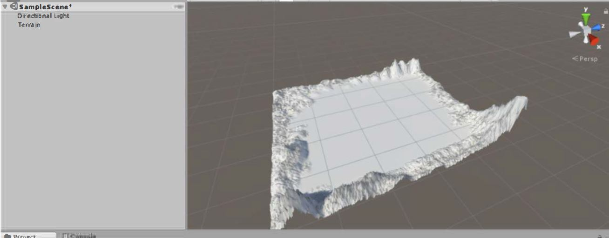
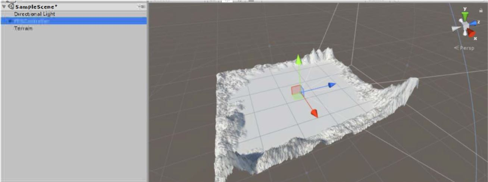
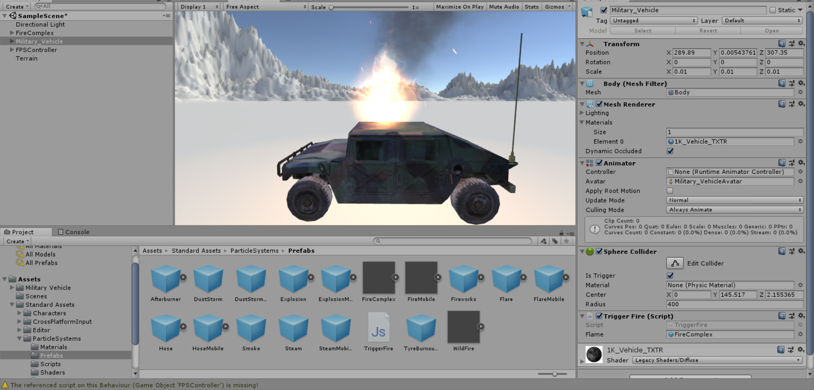
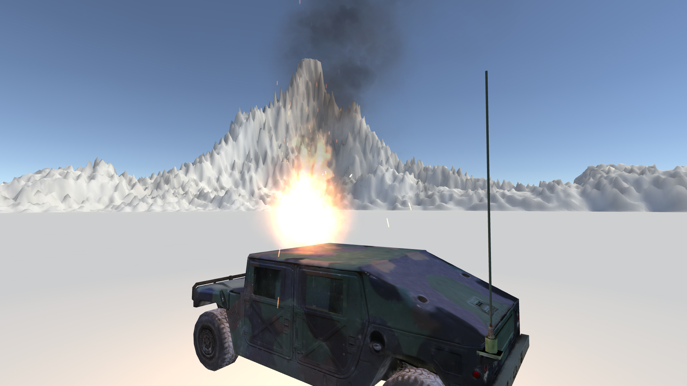
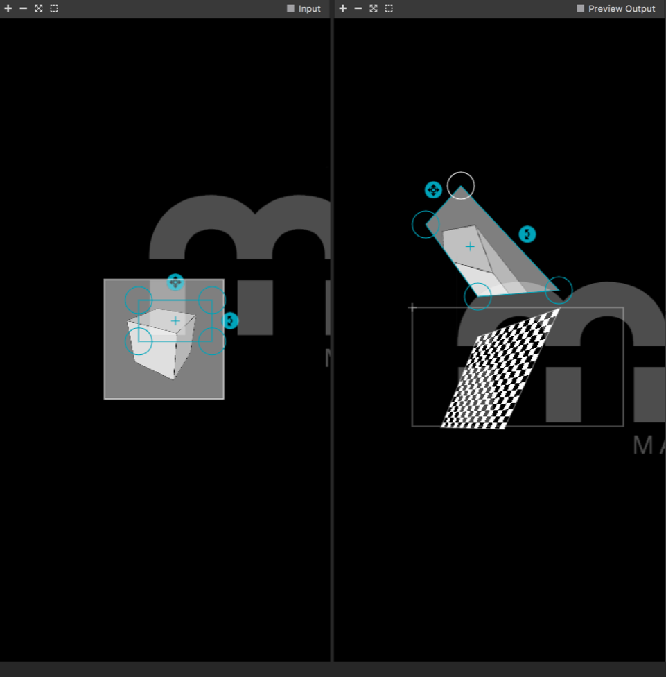

Voor deze excursie voor school ben ik naar Robotanica in Amsterdam geweest op 1 juni 2018. Robotanica vond plaats in de Tolhuistuin. Waar het hier vooral om ging was hoe we bepaalde technologie kunnen toepassen om mens en dier te helpen en hierbij tegelijkerheid rekening te houden met het ecosysteem en het klimaat. Er waren interessante werken en hieronder kan je zien welk werk ik het interessantste vond en waarom.
Unity
Stap 1

In deze stap heb ik een terrein gemaakt en bepaalde gedeelten hoger of lager gemaakt zodat het lijkt alsof er bergen zijn. Door wat uit te proberen met de brushes die er in Unity zijn heb ik verschillende bergen gemaakt.
Uitvoering: Gameobject > 3D object> terrain
Stap 2

In deze stap heb ik een terrein gemaakt en bepaalde gedeelten hoger of lager gemaakt zodat het lijkt alsof er bergen zijn. Door wat uit te proberen met de brushes die er in Unity zijn heb ik verschillende bergen gemaakt.
Uitvoering: Assets> Standard Assets> Characters> Prefab> FPSController
Stap 3
Hier heb ik and ere objecten toegevoegd aan de scene, zeals een kubus, een ei en nog een kubus
Uicvoering: GameObjea > 30 object> Cube
Stap 4
Hier heb ik vervolgens uit de assetstore een auto gedownload en in de scene geplaatst.
Uitvoering: Asset store> gekozen auto download en> importeer auto> Sleep auto in de scene
Stap 5
Vervolgens heb ik een trigger gemaakt met de gegeven code en die heb ik gekoppeld aan het vuur zodat wanneer je binnen een bepaalde radius komt het vuur aan zal gaan.

Stap 6

Dit is het scherm nadat het spel 'gebouwd'is voor Windows zodat het op een groter scherm gespeeld kan worden. Hieronder is ook een video te zien wat er precies gebeurd wanneer ik er met mijn character naartoe loop.
Uitvoering: File> Build settings> Window> Build
Madmapping

Om dit te krijgen is er gebruik gemaakt van Mad mapping en Processing. Wat er nodig was in Processing was een example die gedownload kon warden genaamd Syphon. lk heb dit figuur gemaakt in Madmapping. Helaas werkte Syphon niet op mijn eigen laptop, omdat het niet compitabel is met Windows dus ik heb het gemaakt op iemand anders zijn laptop en deze screenshot ervan gemaakt. Daarnaast was er niet genoeg tijd om de beamer te gebruiken dus ik heb het niet kunnen projecteren.